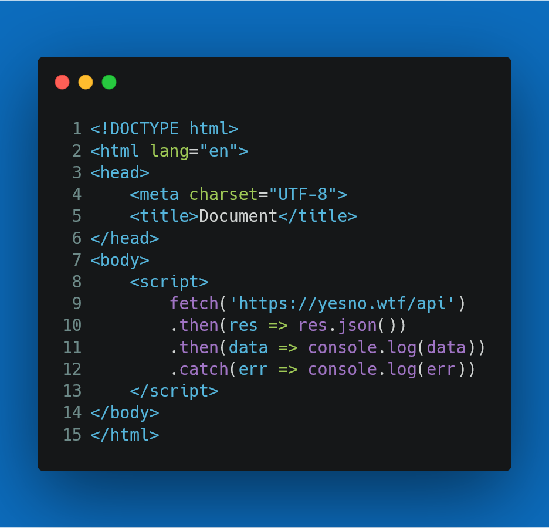

writing minggu 3
fetch Data
terdapat 3 fitur yang selalu dipakai ketika menggunakan JavaScript. kita perlu menjalankan eksekusi kode secara “asinkronus” ke dalam “event loop” dari proses utama JavaScript itu sendiri yaitu :
- Promise
- CallBack
- Await
Metode fetch() dalam JavaScript digunakan untuk meminta ke server dan memuat informasi di halaman web.
Permintaan dapat berupa API apa pun yang mengembalikan data berformat JSON atau XML. Metode ini disebut
promise.
Https
- Get => Mengambil data
- Post => Mengirim Data
- Put => Mengirim/Memperbaharui/update
- Patch => update = request tidak aman (Mengirim data secara parsial)
- Delete => Menghapus Data
cara fetch data

fetch ("https://pokeapi.co/api/v2/pokemon/pikachu/", {
method: "GET"
})
.then ((response) => {
return response.json();
})
.then((data) => {
console.log(data)
})
.catch ((error) => {
console.log(error);
});
web responsif
web responsif adalah sebuah teknik atau metode bagi web designer untuk membuat suatu layout website yang
dapat menyesuaikan diri sesuai dengan ukuran layar pengguna.
Jenis Media Query untuk responsive web design umumnya hanya menggunakan 2 jenis media query yaitu **main-width** dan **mas-width**.
Contoh:
@media screnn and (min-width: your pixel){
}
@media screnn and (max-width: your pixel){
}
> media query digunakan untuk membuat beberapa styles tergantung pada jenis device. terdapat 2 cara dalam menggunakan media query
Cara ke - 1:
membuat file css berbeda untuk masing-masing device
Cara ke - 2:
menggabungkan 1 file css untuk setting styling berbagai device.
### Breckpoint
> perubahan yang terjadi pada tampilan saat berganti device atau ukuran width disebut breckpoint.
### complex Breackpoint Media Query
> jika menginginkan tampilan yang ingin diterapkan pada range ukuran device tertentu. kita bisa membuat menjadi range media query
contoh :
body{
background-color: white ;
}
@media screen and (min-width: 500px) and (min-width: 700px)
body {
background-color: aquamarine ;
}
prinsip-prinsip web responsip
- Fluid Grid => rid atau garis-garis batas yang menentukan letak suatu komponen dalam desain, namun dapat
berubah-ubah sesuai dengan ukuran tampilannya.
- Media queries => memungkinkan website untuk dapat mengambil data mengenai ukuran layar yang digunakan
untuk menampilkan konten.
- Responsive media => memastikan bahwa media seperti foto dan video dapat ditampilkan dengan baik di
berbagai ukuran layar.
keuntungan responsif
- Dapat diakses oleh berbagai device dengan ukuran layar berbeda-beda
- Lebih hemat biaya
- emudahan dalam maintenance
- Halaman yang lebih cepat dibuka
boostrap
dalah sebuah framework HTML, CSS, dan JavaScript yang berfokus untuk menyederhanakan pengembangan halaman web
atau website.
cara memanggil boostrap
- online => dengan memanggi lngsng dari boostrap dan harus memiliki koneksi utuk menggunakannya
keuntungannya bila aa pembaruan, maka kita juga akan iperbarui
- offline => dengan mendownload dan membuat folder baru dan dimasukkan ke dalam folder yang kita kerjakan
keuntungan menggunakan boostrap
Responsif
Kemudahan penggunaan
Pengembangan cepat
Dukungan komunitas yang besar
Konsisten